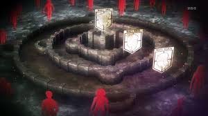

الحبكة الرئيسية
تبدأ القصة باختراق العمالقة للجدار الخارجي، مما يؤدي إلى مقتل العديد من الأشخاص. يقسم إيرين على الانتقام ويقرر الانضمام إلى الجيش لمحاربة العمالقة.
"هجوم العمالقة" (باليابانية: 進撃の巨人، Shingeki no Kyojin) هي سلسلة مانغا يابانية من تأليف ورسم هاجيمي إيساياما. تدور القصة في عالم خيالي حيث يعيش البشر داخل مدن محاطة بأسوار ضخمة لحمايتهم من كائنات عملاقة تسمى "العمالقة".
البطل الرئيسي للقصة، يحلم بحرية البشر خارج الأسوار.
فتاة قوية وماهرة في القتال، تحمي إيرين بكل قوتها.
صديق إيرين المقرب، يتمتع بذكاء استراتيجي.
تبدأ القصة باختراق العمالقة للجدار الخارجي، مما يؤدي إلى مقتل العديد من الأشخاص. يقسم إيرين على الانتقام ويقرر الانضمام إلى الجيش لمحاربة العمالقة.